1992 · Sydney to the Netherlands
The Flying Vignale
How a Gamine that had sat under a Sydney carport for six years made it home to the Netherlands — by plane.
This story tells of the most recent adventures of a newcomer among the Vignale Gamines registered with the Fiat 500 Club Nederland... Find out how this brand-new acquisition ended up in our little frog-pond of a country. Read the how, what, where and why of FIAT110F1911571...
Some background
A 1.90m-tall student decides, after finishing his HEAO degree, not to sit at home waiting for his postponed follow-up studies, but to head out into the wide world for 8 weeks. The plan: 4 weeks in Indonesia and 4 weeks Down Under in Australia. His dear old dad promised him the trip; the rest has to come out of his own pocket... Four weeks in Indonesia become six, and 28 days in Australia stretch out to more than 300. We pick up the story as Martin nears the end of his contract with International Market Development Pty Ltd (Sydney). He has just sold his motorbike and is wondering how best to convert all those Australian dollars into Dutch guilders...
Sydney, August 1992
Yes, that Yamaha XT500 — after six months of wrenching on it — I've just managed to sell at a decent price. In the meantime the Australian dollar has dropped from 1.50 to 1.15 guilders. I get the idea of buying a Volkswagen Beetle and shipping it to the Netherlands in a container. The profitable sale is supposed to make up for the exchange-rate loss. Thanks to the favourable climate, cars in Australia generally last a lot longer than we're used to. Still, in the short time I have left in the land of koalas and kangaroos, I can't find a classic Beetle in perfect condition for a bargain price... Hmmm, that's a disappointment!
About two weeks before my planned departure, though, a unique opportunity presents itself. My American colleague Liz needs a lift to Huntershill, one of the nicest neighbourhoods in Sydney. Her 'landlady' Carole is separated from her husband, one of the Grace brothers. (Grace Brothers is a giant department-store chain, familiar to many from the TV series 'Are You Being Served?'!) Liz rents one of the many empty rooms from her and is treated like a daughter. The driveway around the swimming pool and the view over Sydney make me swallow hard more than once. Next to a station wagon and a gorgeous 4-door Morgan, there's also a tiny little car under the carport, with a tarpaulin thrown over it.
\n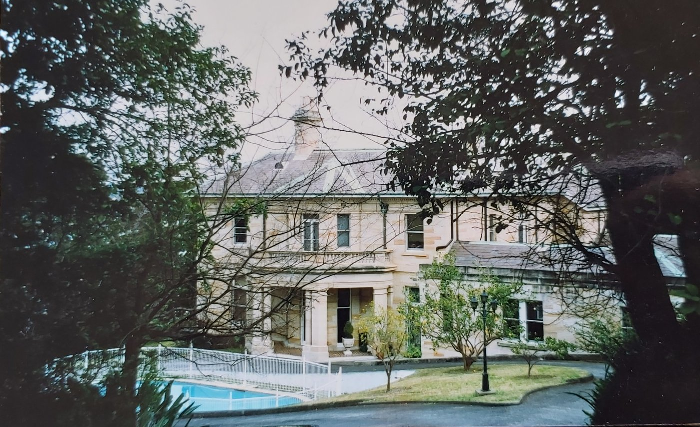
I'd already heard that the little thing no longer runs and hasn't moved from its spot in about six years. Wondering to myself what kind of tiny little thing could possibly fit under that tarp, I decide to give the whole thing a closer inspection: a TWO-SEATER CONVERTIBLE with a 500's rear end??? The type plate says 'Vignale', and on the steering wheel (right-hand!) and on the grille (in big letters!) it says FIAT: WOW. I fall in love on the spot! Bodywork, floor, sills — nothing seems to have suffered from its lonely spell under the carport. The tyres are all flat, though. Carole tells me it's a GAMINI or GAMINE Vignale, and that she once bought the little car in Australia.
\n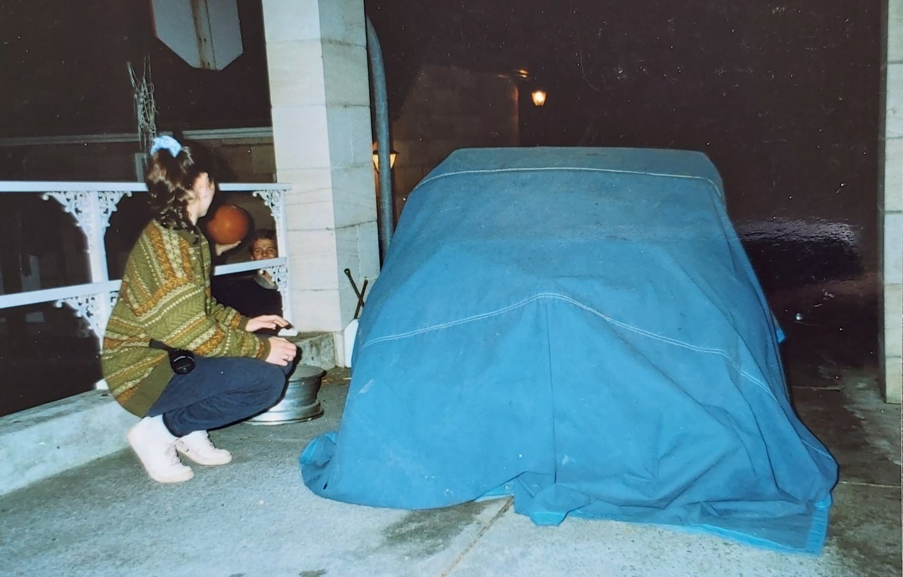
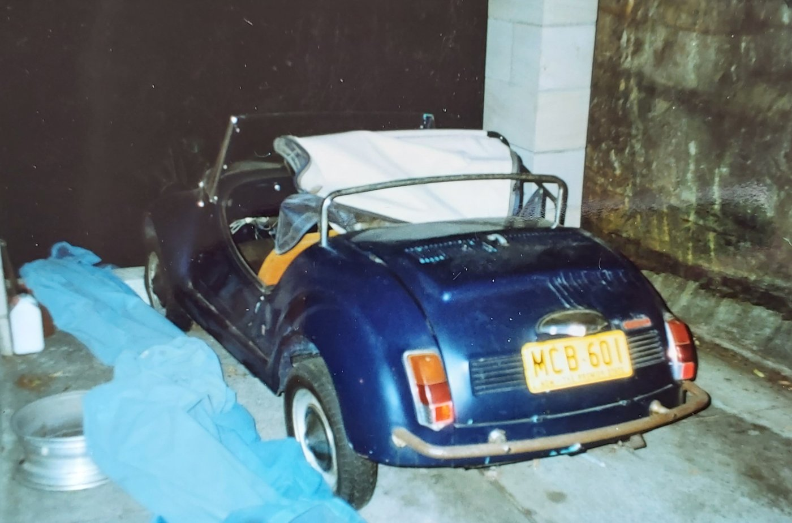
The previous owner brought it over from England. She's sorry that her sons aren't technical enough to get it running again — about six years earlier it had suddenly refused to start, and it hasn't had an inspection or insurance since 1987... She confides that she's already tried once to find a buyer, but a Fiat enthusiast willing to pay A$4,000 for it remains elusive. She knows it's quite rare, and that in Australia, for instance, only two of them are still on the road or standing about.
\n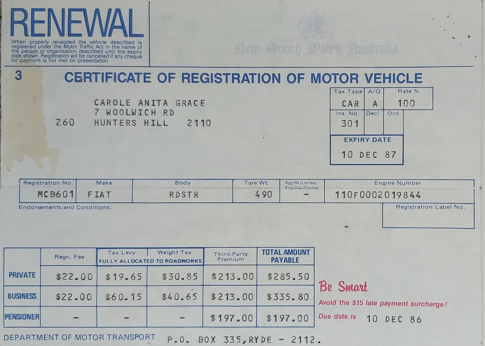
OK: ACTION! My brother (also a car nut) finds out through the FIAT 500 Club that around 35 Vignale Gamines were once sold in the Netherlands. A complete example can fetch between 10 and 20 thousand guilders. The message is clear: 'make sure it gets to the Netherlands!!' My 'cash' offer to Carol Grace is discussed over a cup of coffee, and one of her sons still finds it a bit hard to accept, but in the end my offer is accepted!
\n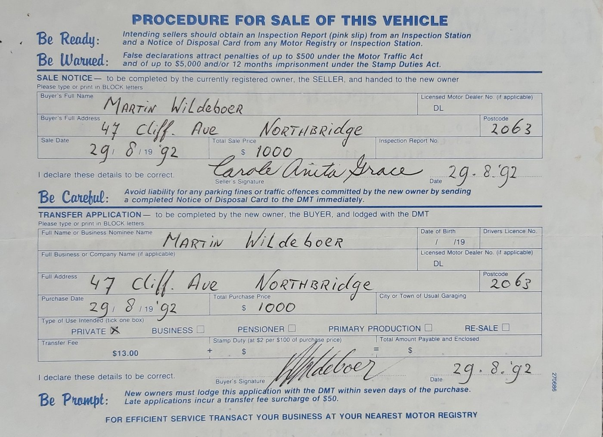
With the help of a borrowed battery, an attempt is made to give the Gamine some fresh energy. A bit of sandpaper between the points works wonders, and to the loud cheers of the bystanders — and certainly of myself too! — the shaking rear end comes to life. According to me, the engine ran under its own power for a good twenty seconds before stalling again. Bystanders claim I was counting rather fast... but the fact is, the engine works!
\n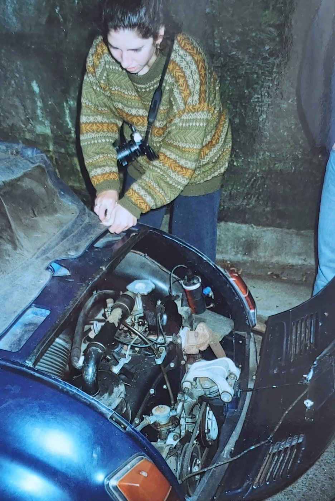
Now just the transport... For that, it first has to actually roll. After the tyres are given some fresh air, my Gamine still doesn't want to budge: one of the brakes is stuck fast. After a lot of tapping and knocking, we manage to free the brake drum. Removing the brake shoes offers a quick fix — except that it lets the brake fluid flow freely...
Once that problem was also sorted out, the search for a shipping company could begin. A twenty-foot container is the first thing that comes to mind. After all sorts of enquiries, I arrive at around A$1,580, including CAF* and BAF**, but excluding port costs in Sydney and Rotterdam. Sharing a container with others is also an option, but having a custom-built crate made (to put the Gamine in) makes that option more expensive after all. Then the manager at Nippon Express asks me why I don't just put the little thing on a plane. I point out that carry-on luggage is limited to twenty kilos, and that although it does have seatbelts, would that really get it counted as a backpack?? To my great surprise, though, he offers me a price of A$2,625, all in! The difference in insurance costs — flying takes about 59 days less, so the insurance is a lot cheaper — makes the price gap even smaller. For A$700 I don't want to risk something happening to it during a long sea voyage — containers do occasionally fall off the deck, after all...
Anyway, having decided to make a Flying Vignale out of it, a way still needs to be found to bridge the distance between Huntershill and the airport. Hiring a trailer turns out to be much more expensive than simply outsourcing the whole transport to 'H.M. Towing Service': for A$85 it's picked up, and three-quarters of an hour later it's safe and sound at the huge Nippon Express warehouse. There it's allowed to stand free of charge until the day some Qantas bird flies it off to colder climes. That has to happen on the 21st of September, so that I myself still have time to make my own way home via Aeroflot, through Singapore, Kuala Lumpur, Moscow and London... (annoying, when your car flies straight to Amsterdam with Qantas!).
\n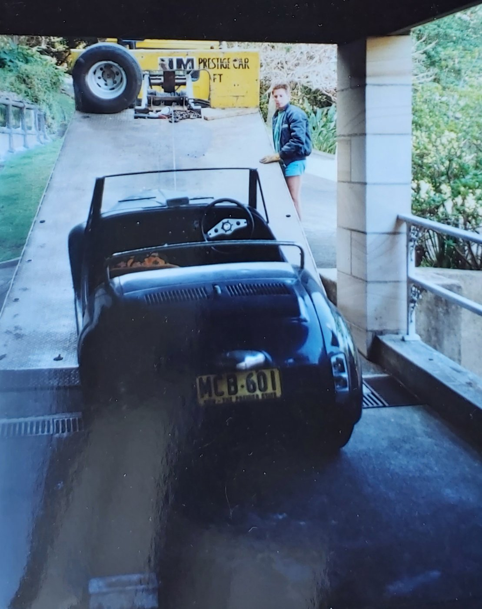
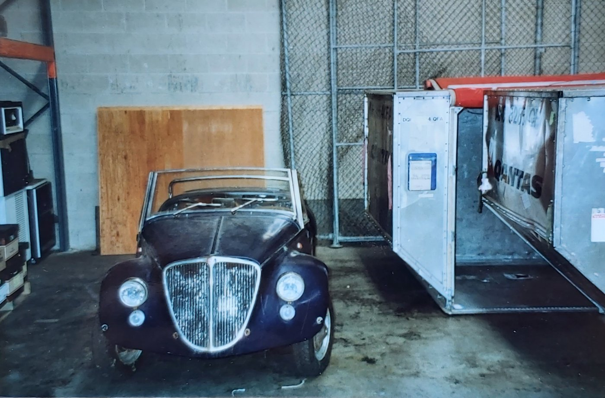
The Netherlands, the sequel
On 23 September I get a call from Nippon Express at Schiphol with the news that my car has arrived. Unfortunately it's not possible to import the car through Schiphol. That can only be done in Amsterdam, Rotterdam, and a number of selected border towns... They can of course help me with transport — in a sealed container, is that the rule? — to Rotterdam, since that's closest to where I live. Cost: 300 guilders. I reply that this doesn't get me anywhere, since I'd still have to arrange transport from Rotterdam to Vlaardingen myself. It apparently can't be done any other way. Or...??
At the Tax and Customs Administration on the Westzeedijk in Rotterdam, they are first of all thoroughly surprised at the vehicle I'd like to import — the name Vignale Gamine is completely unknown there. They then give me the tip to offer Nippon Express a deposit. That way they're assured that the car they release will actually be imported. Unfortunately, this turns out to run into administrative difficulties at Nippon... They do give me the phone number of a company that could arrange it. In the end I end up at KLM Cargo, where putting up a deposit is no problem at all. The paperwork gets sorted out the very next morning, and I even get a tip on how to get the deposit back as quickly as possible.
Armed with the necessary papers and a car-transporter from Wolders in Rotterdam (169.45 guilders, including the fuel used), I can pick up my property from Nippon. The Gamine is strapped down onto a large plate and is already enjoying its first bit of Dutch attention. The transport clearly went off without a hitch. On the drive to Rotterdam, many a motorist cranes his neck, and I get to see plenty of smiling faces and thumbs-up.
\n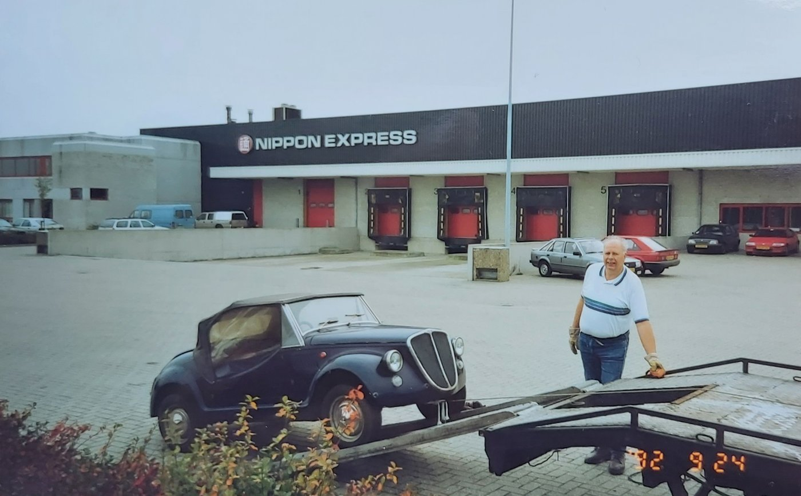
At customs in Rotterdam everything is also arranged very quickly, and Mr Bakker asks me if he may make a copy of the Vignale brochure that Lidwina Verduin had sent me — to complete his own archive! The total amount payable there is a bit of a letdown: almost 1,500 guilders, and that's including a 90% age discount on BPM tax!
The calculation roughly goes as follows... Maybe we can turn this into a quiz right away: whoever can work out how many times double tax was paid wins a spin in a Gamine, or something like that!!
In Vlaardingen, a photo is taken by a windmill. This is a condition of sale that the former lady owner insisted on! After renewing the brake system and headlight reflectors — via Auto Europa Italia — the inspection at the Dutch vehicle authority (RDW) can begin. Incidentally, the standard 500 reflectors fit inside the Vignale's housing. The old ones are still in good condition, but they're angled for the (Australian/English) left-hand side of the road. With a one-day licence plate and a weigh-ticket of 482 kg, the car fails its inspection on 3 November, on 8 points...
\n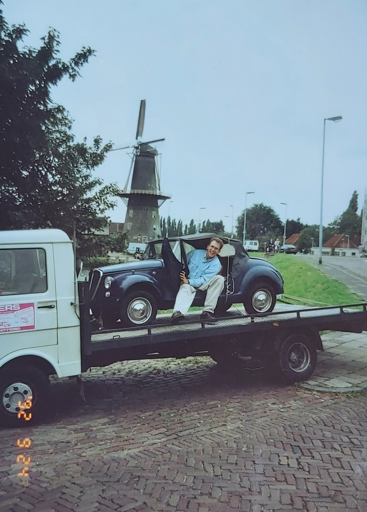
Six days later, though, I'm back again, and this time it works, although the inspector on duty first asks me whether I really think I can get a proper number plate for this 'vehicle'! He does become thoroughly enthusiastic, however, once he learns that it isn't a home-built car, but a genuine Vignale Gamine (something he too has never heard of! One less ignorant person in the world!).
\n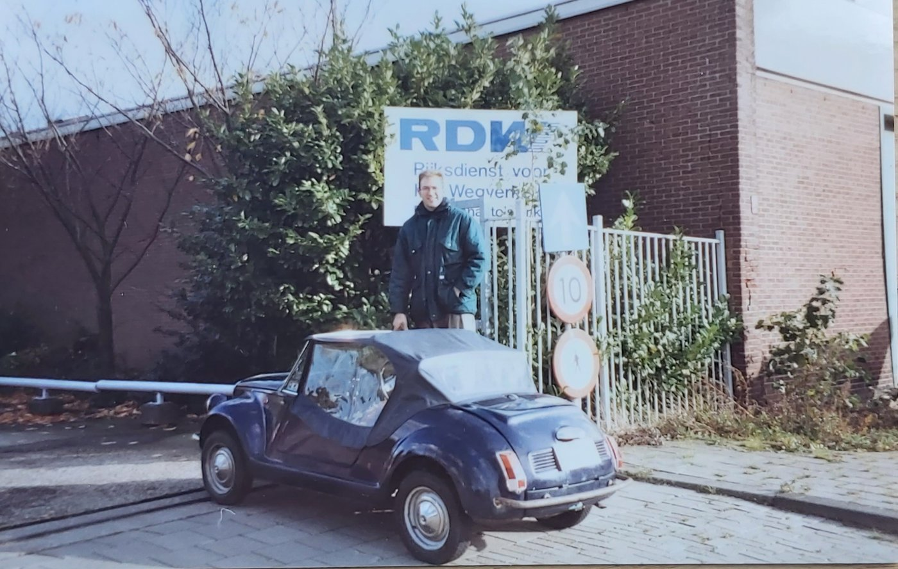
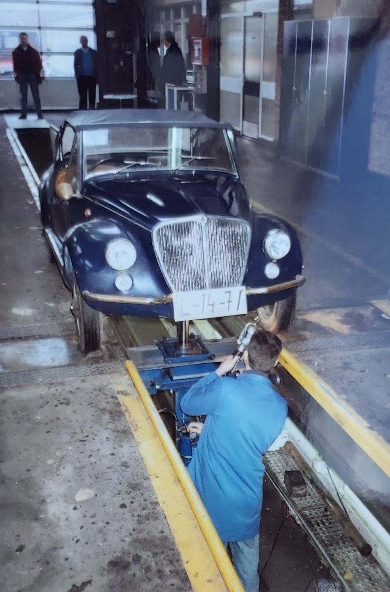
By now FIAT110F1911571 has been living its life for more than a year [as of 1994] with the licence plate DH-30-93. The registration document initially still stated that 'the vehicle is partly assembled from used parts', but that turns out to be down to a mix-up of codes... Now, happily, under 'particulars' it states that 'seatbelt mounting points are not compulsory'!
\n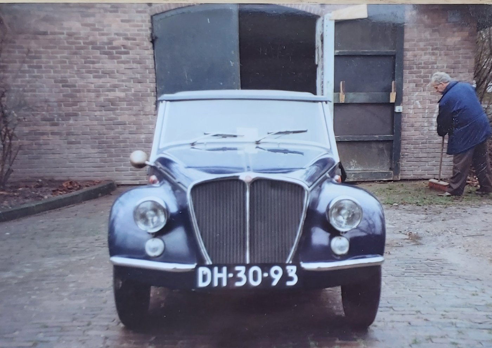
Gamine, Yvon and Martin have already driven to the beach quite a few times to enjoy a sunset, Chianti and pizza, just the three of them. The original idea of selling an Australian car in the Netherlands at a profit will, in all likelihood, never come to anything...
\n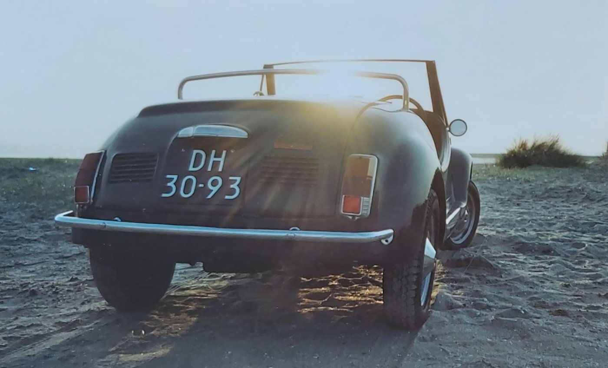
* CAF = Currency Adjustment Factor (for fluctuations in the dollar exchange rate)
** BAF = Bunker Adjustment Factor (for fluctuations in the oil price)